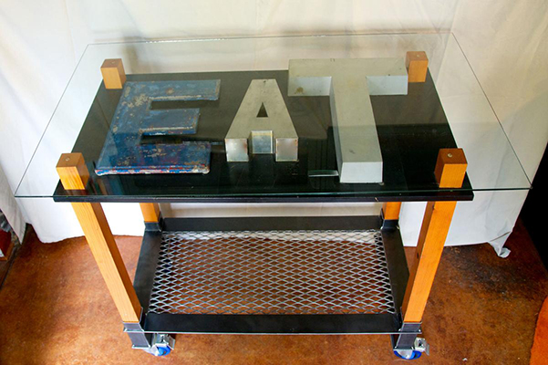
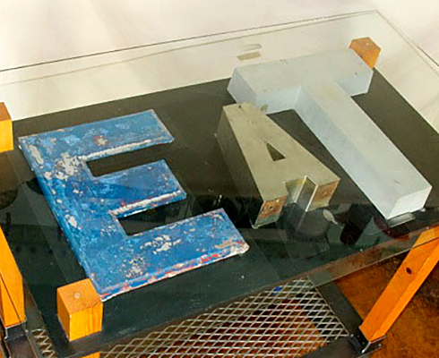

▣ SIGNed FURNITURE
Using salvaged metal letters from old signs to provide whimsy -- and unexpected functionality.



EAT Table
Heart pine legs pass through a matte black wood plane. Glossy black painted letters shadow the salvaged metal signage spelling E A T. The tops of the legs and the letter A support the glass top.
Heavy-duty expanded steel creates the bottom shelf. Heavy-duty locking wheels, matching the E in color, allow for a variety of uses: a bar cart or an extra surface in kitchen prep.
Glass top is 25″ by 44″ by ½” thick. Overall height is 40″. Seats up to 4 people. Materials include salvaged sheet and cast aluminum signage, glass, heart pine wood, painted plywood.
Private collection. Custom commissions available; inquire for pricing and further information.